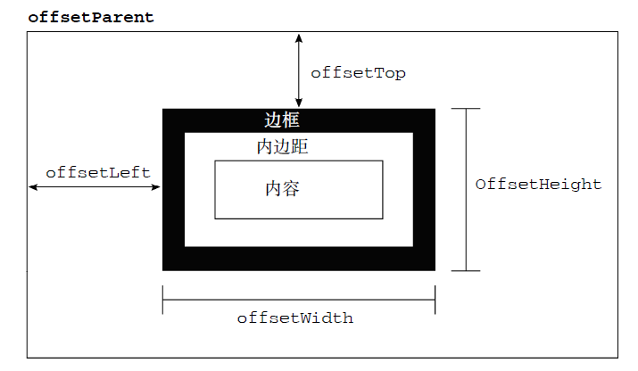
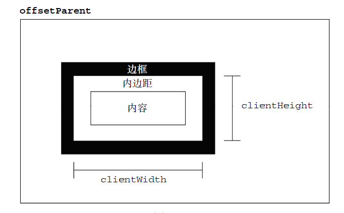
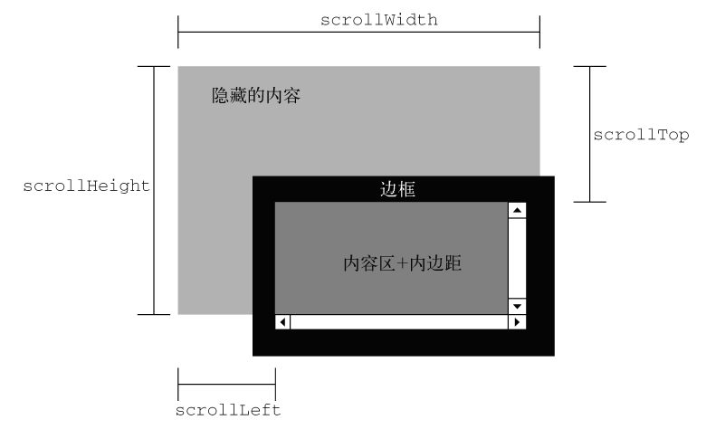

DOM
1. 节点关系
每个节点都有一个childNodes属性，其中保存着一个NodeList对象为子节点的类数组集合，该集合的第一个值为firstChild,最后一个值为lastChild；每个节点都有parentNode属性，指向文档数中的父节点；此外，childNodes列表中的每个节点相互之间都是同胞节点，通过使用每个节点的previousSibling和nextSibling属性，可以访问前后的兄弟节点。
2. 操作节点
最常用的增加子节点的方法appendChild(),用于向childNodes末尾添加一个节点;如果需要把节点放在childNodes列表的某个特定的位置，而不是放在末尾，那么可以使用insertBefore()方法，这个方法接受两个参数，要插入的节点和参照的节点。replaceChild()方法接受两个参数：要插入的节点和要替换的节点。移除节点为removeChild(),传入要删除的节点。cloneNode()可以复制节点(不会复制js属性，IE中会复制事件处理程序)，参数为false时浅复制，只复制节点本身，为true时深复制，复制节点本身及其子节点。
var node = document.createElement('div');
var newNode = someNode.appendChild(node);
var newNode = someNode.insertBefore(node,someNode.lastChild);
var newNode = someNode.replaceChild(node,someNode.firstChild);
var newNode = someNode.removeChild(someNode.lastChild);
var node = someNode.cloneNode(true);
3. 文档子节点
document的documentElement,firstChild,childNode[0]均指向html.
var url = document.URL; //页面URL var domain = document.domain; //页面域名 var referrer = document.referrer; //页面来源页面的URL
查找元素的两个方法：getElementById('id')和getElementByTagName('*')(返回一个HTMLCollection对象).每个元素都有多个特性，操作特性的方法主要由三个：getAttribute()（任何元素的所有特性，也都可以通过DOM 元素本身的属性来访问）,setAttribute()(给自定义属性设置值必用这个),removeAttribute()
var div = document.getElementById("myDiv");
alert(div.getAttribute("id")); //"myDiv"
alert(div.getAttribute("class")); //"bd"，(应
该传入"class"而不是"className"，后者只有在通过对象属性访问特性时才用)
alert(div.id); //"myDiv"
div.setAttribute("id", "someOtherId");
有两类特殊的特性，它们虽然有对应的属性名，但属性的值与通过getAttribute()返回的值并不相同。第一类特性就是style，用于通过CSS 为元素指定样式。在通过getAttribute()访问时，返回的style 特性值中包含的是CSS 文本，而通过属性来访问它则会返回一个对象。由于style 属性是用于以编程方式访问元素样式的（本章后面讨论），因此并没有直接映射到style 特性。第二类与众不同的特性是onclick 这样的事件处理程序。当在元素上使用时，onclick 特性中包含的是JavaScript 代码，如果通过getAttribute()访问，则会返回相应代码的字符串。而在访问onclick 属性时，则会返回一个JavaScript 函数（如果未在元素中指定相应特性，则返回null）。这是因为onclick 及其他事件处理程序属性本身就应该被赋予函数值。由于存在这些差别，在通过JavaScript 以编程方式操作DOM 时，开发人员经常不使用getAttribute()，而是只使用对象的属性。只有在取得自定义特性值的情况下，才会使用getAttribute()方法。
4. DOM扩展
新增的选择符API的核心是两个方法：querySelector()和querySelectorAll(). querySelector()接收一个CSS选择符，返回与该模块匹配的第一个元素，如没有则返回null。 querySelectorAll()同样接受一个CSS选择符，返回匹配的NodeList对象。
var body = document.querySelector('body');
var img = document.body.querySelector("img.button");
var selecteds = document.querySelectorAll(".selected");
var ems = document.getElementById("myDiv").querySelectorAll("em");
元素遍历API为DOM元素添加了以下5个属性：
- childElementCount：返回子元素（不包括文本节点和注释）的个数。
- firstElementChild：指向第一个子元素；firstChild 的元素版。
- lastElementChild：指向最后一个子元素；lastChild 的元素版。
- previousElementSibling：指向前一个同辈元素；previousSibling 的元素版。
- nextElementSibling：指向后一个同辈元素；nextSibling 的元素版。
有了这些属性再也不用担心空白节点了。
HTML5增加了getElementByClassName(),该方法接受一个或多个类名，返回带有指定类的所有元素的NodeList. 新增了classList属性，返回一个类数组实例，包含下列方法：
- add(value)：将给定的字符串值添加到列表中。如果值已经存在，就不添加了
- contains(value)：表示列表中是否存在给定的值，如果存在则返回true，否则返回false。
- remove(value)：从列表中删除给定的字符串。
- toggle(value)：如果列表中已经存在给定的值，删除它；如果列表中没有给定的值，添加它。
HTML5也添加了辅助管理DOM焦点的功能。首先就是document.activeElement属性，这个属性始终会引用DOM 中当前获得了焦点的元素.
document对象引入了readyState属性. Document的readyState属性有两个可能的值：
- loading，正在加载文档；
- complete，已经加载完文档。
5. DOM2和DOM3
任何支持style 特性的HTML 元素在JavaScript 中都有一个对应的style 属性,，但不包含与外部样式表或嵌入样式表经层叠而来的样式。对于使用短划线（分隔不同的词汇，例如background-image）的CSS 属性名，必须将其转换成驼峰大小写形式，才能通过JavaScript 来访问。由于float 是JavaScript 中的保留字，因此不能用作属性名。“DOM2 级样式”规范规定样式对象上相应的属性名应该是cssFloat，而IE支持的则是styleFloat。
“DOM2 级样式”增强了document.defaultView，提供了getComputedStyle()方法。这个方法接受两个参数：要取得计算样式的元素和一个伪元素字符串（例如":after"）。如果不需要伪元素信息，第二个参数可以是null.
var myDiv = document.getElementById("myDiv");
var computedStyle = document.defaultView.getComputedStyle(myDiv, null);
alert(computedStyle.backgroundColor); // "red"
alert(computedStyle.width); // "100px"
alert(computedStyle.height); // "200px"
IE 不支持getComputedStyle()方法，但它有一种类似的概念。在IE 中，每个具有style 属性的元素还有一个currentStyle 属性。
元素具有偏移量属性，如下图所示：
元素的客户区大小（client dimension），指的是元素内容及其内边距所占据的空间大小。
滚动大小指的是包含滚动内容的元素的大小。
